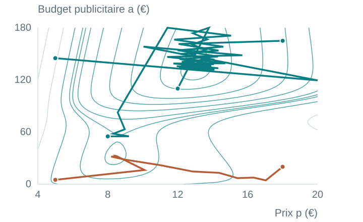

* Meilleur minimum numérique sur le domaine considéré.
Les deux calculs convergent, mais l’un atteint une solution moins profitable.
Le point de départ peut changer le résultat

Un même critère, un même algorithme
Seule l’initialisation change. Les trajectoires rejoignent des vallées différentes.
Des pistes pratiques
Essayer plusieurs départs.
Comparer les coûts finaux.
Utiliser les connaissances du problème.
Trouver un minimum peut être bien plus facile que trouver le meilleur.
De la décision à la convergence
01Choisir les variables
02Définir le critère
03Choisir un départ
04Calculer le gradient
05Ajuster les variables
06Répéter jusqu’à convergence
Critère et domaine convexes
Tout minimum local est global. L’unicité exige des conditions supplémentaires.
Critère non convexe
Plusieurs minima locaux peuvent exister. Converger ne suffit pas à choisir le meilleur.
Pour la hiérarchie inter-spécialités : examiner le modèle et la qualité de sa résolution.
Une règle interne pour chaque spécialité
Les rapports au sein d’une spécialité ont un sens.
Un acte à 300 vaut trois fois la référence à 100.
Deux références à 100 ne sont pas encore comparables entre spécialités.
L’étape inter-spécialités préserve les rapports internes.
On cherche la position relative de toutes les règles
Un facteur multiplicatif par spécialité :
sGastro, sPneumo, sCardio, …
En logarithmes, ces facteurs deviennent des décalages : b = log s.
Une solution candidate place toutes les spécialités simultanément.
Un lien impose une relation entre deux spécialités
Acte Gastro250
travail jugé équivalent
Acte Pneumo180
250 sG ≈ 180 sP
Pour un lien à 80 % : 250 sG ≈ 0,8 × 180 sP
Chaque lien renseigne un rapport entre les échelles.
Les liens forment un réseau
Un nœud représente une spécialité.
Une arête représente un ou plusieurs liens entre actes.
Les chemins indirects participent aussi au résultat.
Le résidu mesure le désaccord avec un lien
rℓ = (bA − bB) − cℓ
Ce que préfère le lien
cℓ : le décalage relatif suggéré par la comparaison des deux actes.
Ce que retient la hiérarchie
bA − bB : le décalage final entre les deux spécialités.
Un résidu nul signifie que la relation du lien est satisfaite.
Le critère exact reste à documenter
Méthodologie française*
Rapprocher les actes liés
Préserver les hiérarchies internes
Résoudre sous contraintes
Formulation de type Braun*
J = ∑ wℓ rℓ²
Chaque poids règle l’importance d’un résidu.
À reconstituer : pénalité, poids, normalisation et sélection des liens.
* Description fournie dans le plan. Les documents originaux restent à joindre.
La formulation quadratique est convexe
Les résidus sont linéaires dans les décalages.
Leurs carrés, pondérés par des poids positifs, forment un critère convexe.
Des contraintes convexes conservent cette propriété.
Sous ces hypothèses, aucun mauvais minimum local.
Un résultat surprenant n’implique pas un solveur bloqué
Si le problème est convexe
Un solveur adapté et correctement utilisé doit atteindre un optimum global.
Des erreurs restent possibles
Équation, signe ou identifiant incorrect
Lien oublié ou mauvais poids
Normalisation incohérente
Ces erreurs concernent les données ou l’implémentation.
Qu’est-ce qui peut déplacer l’optimum ?
01
Les liens Quelles équivalences médicales ?
02
Les poids Quelle importance pour chaque lien ?
03
Le critère Comment pénaliser les désaccords ?
04
Le réseau Quels chemins relient les spécialités ?
Un même optimiseur peut produire des hiérarchies différentes.
Un lien isolé peut peser fortement avec L2
Des liens cohérents, un lien discordant
Avec L2, un grand résidu coûte très cher.
Avec L1, la pénalité croît linéairement.
Comparer L2 et L1 mesure une forme de sensibilité.
L1 ne corrige pas un biais partagé par tous les liens
Lien 1←
Lien 2←
Lien 3←
Lien 4←
Lien 5←
Si tous les liens tirent dans le même sens, aucun n’est isolé par rapport aux autres.
Sélection des actes
Calibration intra-spécialité
Définition des actes ou interprétation commune
La robustesse aux valeurs isolées ne suffit pas contre un biais systématique.
L’influence d’un lien dépend de sa place dans le réseau
Un lien impliquant Gastro peut modifier sa position par rapport à Pneumo, même indirectement.
Les autres liens peuvent aussi maintenir Pneumo en place, malgré des désaccords directs.
L’analyse doit porter sur le réseau complet.
Sélectionner les liens fait partie du modèle
01
Propositions des experts
02
Examen et exclusions
03
Graphe retenu
04
Optimisation
Quels liens ont été rejetés, et pour quelles raisons ?
Seuil de résidu ? Durée ? Exclusions successives ?
Un lien retiré n’a aucune influence directe sur le calcul final.
Gastro–Pneumo : sept rapports du même côté
7 / 7 rapports inférieurs à 1
≈ 0,73 moyenne arithmétique
Rapports reconstruits fournis dans le plan : 0,61 · 0,93 · 0,67 · 0,62 · 0,75 · 0,80 · 0,71.
Un signal à examiner, une cause encore à établir
Ce que montre la comparaison
Un écart dans le même sens
Un motif qui dépasse une seule paire extrême
Un résultat qui mérite une investigation
Ce qu’elle n’établit pas
La conservation des sept liens et leurs poids
Le rôle des liens directs dans le résultat
Une erreur du solveur ou un biais réel de 27 %
L’observation seule ne permet pas d’identifier son mécanisme.
La première étape : reconstituer le calcul réel
Les données de chaque lien
Proposition, conservation ou rejet
Valeurs intra-spécialité aux deux extrémités
Équivalence ou pourcentage
Poids et résidu final
Le problème complet
Graphe de toutes les spécialités
Critère et contraintes
Normalisation
Règles et historique des exclusions
Quelles contraintes déterminent réellement la position Gastro–Pneumo ?
Une analyse de sensibilité en six tests
D’abord reproduire la hiérarchie de référence.
Retirer un lien
Mesurer son influence individuelle.
Comparer L2 et L1
Repérer le rôle des grands résidus.
Tester Huber
Explorer un compromis robuste.
Retirer une paire de spécialités
Mesurer sa place dans le réseau.
Faire varier les poids
Évaluer la stabilité des positions.
Inspecter les résidus
Comparer relation attendue et finale.
Suivre notamment le rapport sGastro / sPneumo.
Le diagnostic revient à deux questions
Le minimum a-t-il été trouvé ?
Pour une formulation convexe correctement implémentée, c’est une question vérifiable.
Le problème traduit-il les comparaisons médicales ?
Liens, biais partagés, exclusions, poids, critère, réseau et valeurs internes restent à examiner.
L’incertitude scientifique porte surtout sur ce que l’on optimise.
Comprendre le résultat exige de comprendre ses entrées
L’optimisation donne la meilleure solution pour le critère qu’on lui fournit.
Dans le cadre convexe, trouver ce minimum ne devrait pas être la difficulté principale.
La question centrale est la pertinence des liens, des poids et des contraintes.
Prochaine étape : reconstruire le graphe et quantifier l’influence des liens.
A · La formulation par observations de Braun
min ∑(i,j) retenus wij (dij + bj − ai)²
bj : décalage de la spécialité j
ai : position de compromis du service lié i
dij : valeur interne sur l’échelle additive utilisée
Les translations préservent les rapports sur l’échelle initiale.
B · Les logarithmes transforment les rapports en écarts
Wi = sj dij
log Wi = log sj + log dij
Avec bj = log sj, un facteur multiplicatif devient un décalage additif.
L’alignement devient linéaire dans les décalages inconnus.
C · Pourquoi le critère L2 est convexe
J(b) = ‖W1/2(Ab − c)‖²
∇²J = 2 AᵀWA ⪰ 0
Des poids non négatifs donnent une matrice hessienne positive semi-définie.
L’unicité exige une origine fixée et un graphe suffisamment connecté.
D · Trois façons de pénaliser les résidus
Critère
Pénalité
Interprétation
L2
r²
Coût quadratique
L1
|r|
Coût linéaire
Huber
½r² si |r| ≤ δ δ(|r| − ½δ) sinon
Quadratique près de zéro, linéaire au-delà du seuil
Le seuil δ et les poids font partie des choix à examiner.
E · Le schéma historique CNAM
Principe illustré
Deux échelles de spécialité
Des rapports internes conservés
Des actes liés pour les rapprocher
Schéma pédagogique redessiné. La figure originale CNAM n’est pas fournie dans le projet et reste à joindre.
F · Les sept comparaisons Gastro–Pneumo
Comparaison*
1
2
3
4
5
6
7
Rapport final G/P
0,61
0,93
0,67
0,62
0,75
0,80
0,71
Les sept rapports sont inférieurs à 1. Leur moyenne est proche de 0,73.
* Numérotation dans l’ordre du plan, sans identification des actes. Tableau descriptif reconstitué à partir du plan. Le tableau original SFED reste à joindre.